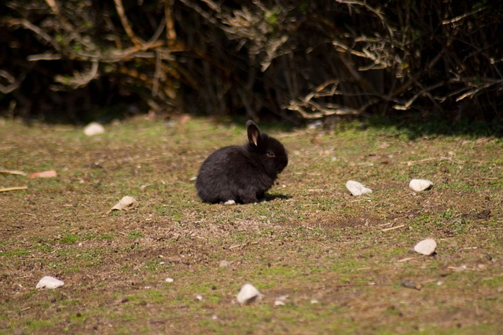
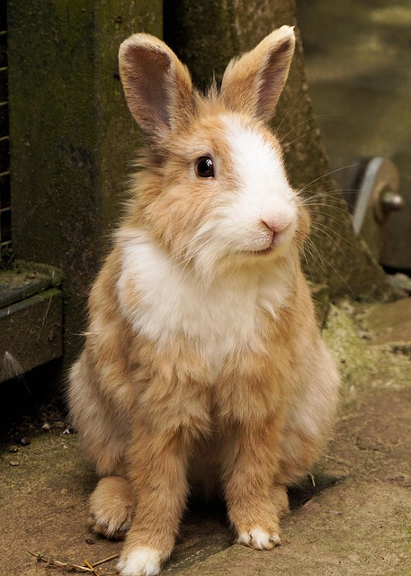
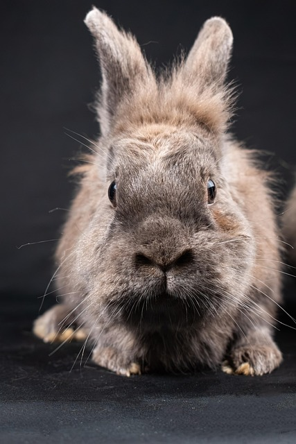
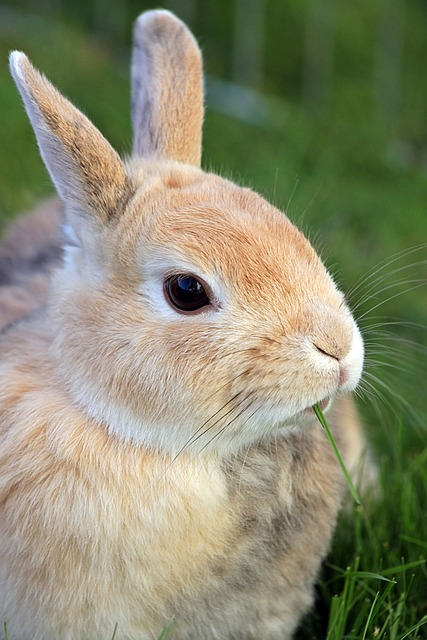
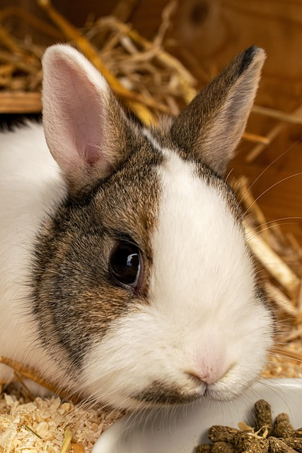

<!DOCTYPE html>
<html lang="en">
<head>
<meta charset="UTF-8">
<meta name="viewport" content="width=device-width, initial-scale=1.0">
<title> Landing page</title>
<link rel="stylesheet" href="style.css">
</head>
</html>

<body>


  <div class="first-header">

     <div class="logo-links">
       <div class="logo">WORLD OF BUNNIES</div>
       <ul>
        <li><a href="#">About</a></li>
        <li><a href="#">Donate</a></li>
        <li><a href="#">Contacts</a></li>
       </ul>
     </div>
     

     <div class="main">

     
     <div class="left">
       <div class="header">Down the bunny hole</div>

       <div class="text">This website has interesting facts and ridiculously cute pictures of bunnies.
                      <p>Just look at this bunny. A-D-O-R-A-B-L-E</p></div>
                      

       <button class="first-button">Sign up</button>
      </div>

    <div class="right">
      
    </div>
     </div>
  </div>

  

  <div class="second-header">

    <div class="second-logo">Facts about bunnies.</div>

    <div class="container">

       <div class="content">
         
          <div class="second-text">Bunnies are very sensitive and high-maintenance animals.They require a lot of attention,patience and calm environments.It's not a "first animal" kids friendly animal.</div>
       </div>
   
       <div class="content">
          
          <div class="second-text">Bunnies are like cats and dogs. They require a lot of free space to hop,run,jump and exercise.They can not and should not live in cages.</div>
       </div>

      <div class="content">
       
       <div class="second-text">Bunnie's main source of nutrition is hay and dark leafy greens. Don't trust cartoons.Carrots are high-sugar snack and should be given in moderation. Cabbage should not be fed to bunnies. It can cause gastrointestinal issues.</div>
      </div>

      <div class="content">
       
       <div class="second-text">Bunnies can be trained. They are fast learners and can learn commands. But usually choose smart ways, not hard ways :D</div>
      </div>
    </div>
  </div>


  <div class="third-header">

    <div class="quote-page">
      <div class="quote">Whoever says "It's only a rabbit" has obviously never loved a rabbit.</div>
      <div class="author">- Some very wise internet persona</div>
      
    </div>
  </div>


  <div class="fourth-header">

    <div class="action">
      <div class="join">Join our community!</div>
      <div class="news">Share your stories, pictures, facts and everything bunny related with WOB members!</div>
    </div>

      <button class="another-button">Join now!</button>
  </div>

  <div class="footer"> Copyright © The Odin Project 2025</div>
  
</body> 